Cool Tools
Tips, Tools, and Services to Help You Succeed
Introduction
The huge variety of resources available to you as a student of UW-Madison is one of the best things about
being here. It's also one of the biggest challenges! Keeping up with your course work is hard enough, let
alone staying current with all of the different services, tools, and technologies that are available to you
as a student.
This list is just a handful of the tools, services, and offerings that can help you succeed in your time at
UW-Madison. It includes both UW-Madison specific services and tools as well as others that may not be
officially supported by DoIT.
Browser Extensions
Many of the tools in this guide offer browser extensions to provide their features and
functionality. These are small bits of software that you can install in your web browser of choice (e.g.
Chrome, Firefox, Safari) that enable extra functionality beyond the default browser experience.
These are usually free of charge, are straightforward to install, and can be found via internet search or by
browsing the extension galleries for each respective browser:
It's best to avoid installing browser extensions from anywhere other than the official collections. It is
possible for unscrupulous people and companies to add malware, trackers, and other harmful code to
browser extensions that come from external sources.
The official repositories monitor extensions for this type of malware, but untrusted, unofficial sources
may not - they may even add their own!
UW-Madison Web Resources
UW-Madison IT Home Page
http://it.wisc.edu
A great place to start when trying to figure out how to do something technology related on campus.
UW-Madison Knowledge Base
http://kb.wisc.edu
The Knowledge Base houses documents explaining how to do all kinds of tech-related things on campus (set up
Office 365 on your phone/tablet, connect to Housing printers, etc.). It can sometimes be a little hard to
find exactly what you are looking for, but it is a comprehensive resource of technical know-how.
DoIT Help Desk
http://helpdesk.wisc.edu
The DoIT Help Desk is a great way to get help setting up your devices, fixing and troubleshooting hardware
and software problems and getting service for devices under warranty.
Help is available a variety of ways:
WiscVPN
https://it.wisc.edu/services/wiscvpn/
VPN is a virtual protected network that secures your online connection whenever you are on unsecure or public
wireless. Free and simple to install.
Many campus services can only be accessed with VPN active on your device - for example, editing campus
websites built with WordPress.
After installing the client, simply log in with your usual NetID and password and you're all set.

LinkedIn Learning
http://go.wisc.edu/linkedinlearning
Industry-leading online software and general skills training available at no cost to all UW-Madison students
as well as faculty and staff.
The huge amount of content is a great resource but can make it hard to know where to start.
For more information about LinkedIn Learning (including how to link your UW account to your personal LinkedIn
profile) visit the KB document here: https://kb.wisc.edu/21673
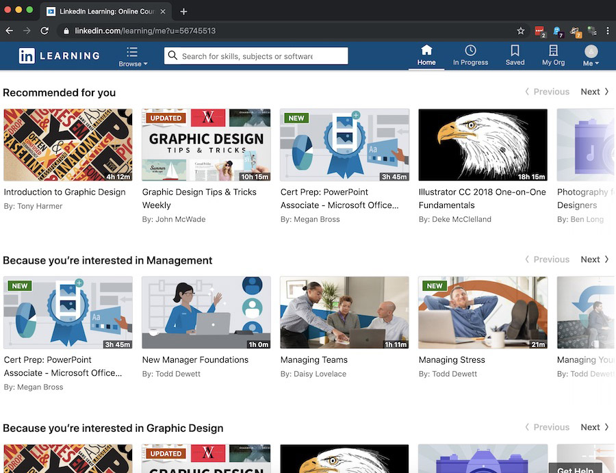
Hardware and Software
Campus Software Catalog
http://software.wisc.edu
Access to all of the software that UW-Madison students get for free. Includes:
- Microsoft Office 365 (Word, Excel, Powerpoint, Outlook, OneNote)
- MATLAB, R, Stata/SPSS, SAS
- Symantec endpoint protection tools
UW-Madison Equipment Checkout
https://it.wisc.edu/services/equipment-checkout/
UW offers a wide range of equipment for rent, including dual-boot Mac/PC laptops (complete with a the full
Microsoft and Adobe suites), iPads, video cameras, projectors, and audio recorders.
AlternativeTo
https://alternativeto.net/
AlternativeTo is a crowdsourced database of alternatives to popular (and often very expensive) software
titles like Adobe Photoshop, Microsoft Excel, and more.
Most of the alternatives are free and open-source, and the listings include reviews and pros-and-cons
provided by real users with experience using the program.
Academic Tools
Learn@UW
Learn@UW is the name of the suite of digital tools that UW-Madison provides to help students, faculty, and
staff succeed.
It contains a number of different services that you may encounter during your time at UW-Madison. Here are a
few of those tools.
Canvas
Canvas is the official Learning Management System (LMS) used by UW-Madison. It is used by instructors to post
course content for their academic classes as well as by groups like STS for non-academic purposes.
The interface is pretty intuitive, but it can sometimes be hard to know where to find things in a course
because instructors can customize them in a variety of ways. One instructor might organize readings, videos,
and quizzes into Modules by class topic, while another instructor might not use Modules at all.
If you ever need help figuring out how to use Canvas, the Canvas training course for Students gives a good overview of how it works, and
you can always schedule one-on-one help with Software Training for Students via our Ask A Trainer service.
Kaltura MediaSpace
https://mediaspace.wisc.edu
Kaltura is the official video service supported on campus. If you ever need to host a video project created
for class, Kaltura is the place to go.
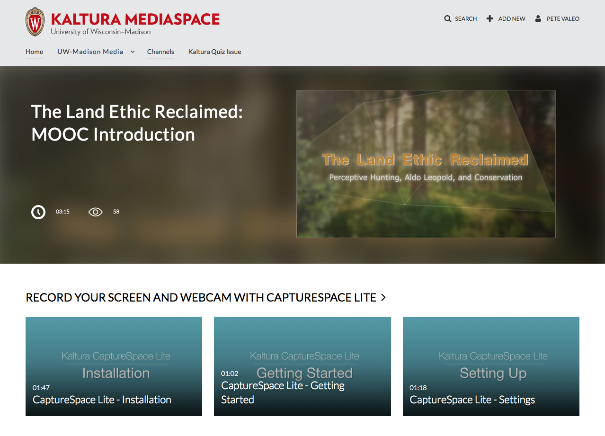
Online Storage
Google Drive
http://drive.google.com
Unlimited file storage and sharing, with excellent real-time collaboration/editing plus easy sharing with
anyone on or off campus. You can upload files from your local computer for storage in the cloud and access
them anywhere you can get online.
Drive also features Google Apps (aka G Suite), which is Google's suite of productivity tools.
There are a variety of tools in Drive, but the ones that are most commonly used on campus include the
following:
Google Docs
A fully featured word processor, akin to Microsoft Word.
Google Sheets
Google's answer to Excel and is used for spreadsheets and working with data, graphs and charts.
Google Slides
Similar to PowerPoint and allows you to create presentation slides anywhere you have an internet connection.
Pros: Excellent collaboration, unlimited storage, campus-supported, offers local file
syncing
Cons: must be online to use, is tied to your NetID (meaning your files are no longer
available after graduation unless you manually copy them all and share with your personal Google account).
Box
http://uwmadison.app.box.com
Another option for file storage and sharing, plus collaboration and online editing.
Pros: A high limit on storage, excellent file sharing and permission system,
campus-supported, has local file syncing
Cons: Collaboration features can be clunky, file syncing is sometimes inconsistent, not
available after graduation
OneDrive
http://onedrive.live.com
(sign-in using your
NetID@wisc.edu email address)

1TB of free storage that integrates directly with Office 365.
Pros: Interfaces directly with Microsoft Office, campus-supported,
Cons: Collaboration features not as streamlined as Google Drive, file syncing can be
inconsistent, not available after graduation
What Happens To My Data After I Graduate?
Any data you save on campus-provided tools like Google Drive or Box will eventually be deleted after you
leave the University.
This Knowledge Base article provides more
information about what happens to the digital files you store on campus-provided services after
graduating or leaving UW-Madison and offers suggestions on ways to save your work.
Productivity
Microsoft Planner
http://tasks.office.com
Another simple-to-use tool for project management, but this time one that integrates with the Microsoft tools
that are used elsewhere on campus.
Asana
http://asana.com
Another tool for project management that offers a variety of ways to create and assign tasks, as well as
share projects with others. Asana is not officially part of the UW-Madison software tool set but is free to
use for small groups.
Trello
http://www.trello.com
A simple-to-use tool for project management with a straightforward card-based interface that allows easy
collaboration. Assign tasks and change status with simple drag-and-drop mechanics.
Todoist
https://todoist.com
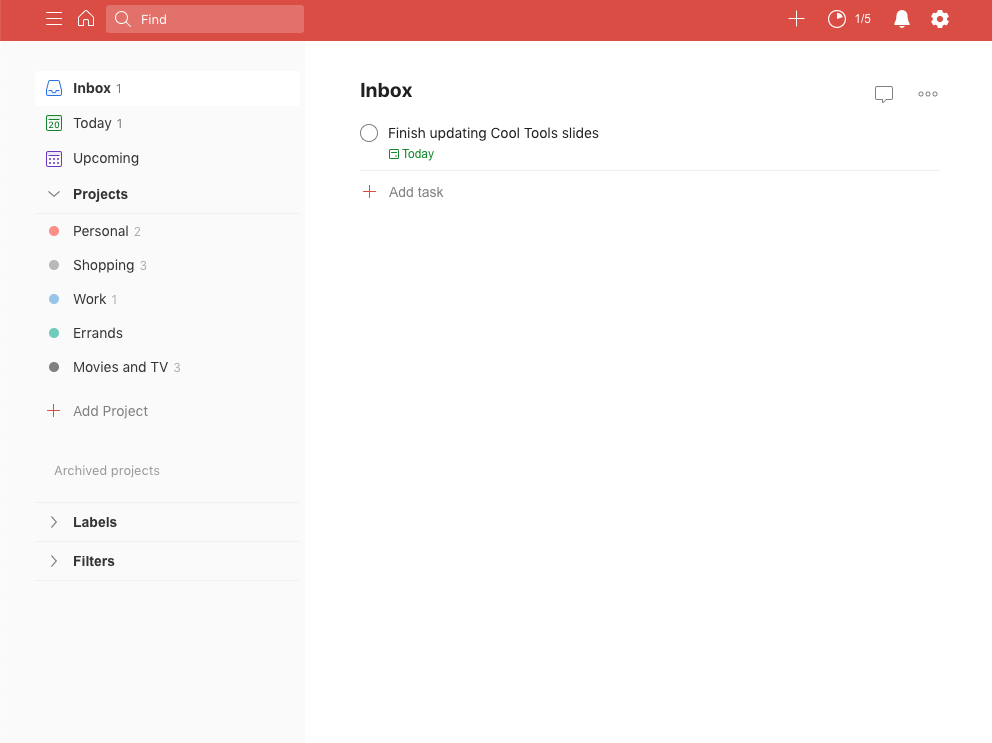
This is a web-based tool that allows you to easily create and manage a to-do list.
Notion
https://www.notion.so/
Another entry in the project management tool camp, Notion offers collaboration, note and file management,
tagging, and more. Syncs across devices, has nicely featured mobile apps. Free for a single user, which can
have up to 5 collaborators.
Badger Planner
Chrome
Extension
This Chrome Extension was developed by one of STS's very own trainers! It allows you to export your course
schedule for the semester from the student information system, and import it as an .ics file into your
campus Office 365 calendar!
Note-Taking Software
OneNote
http://onenote.live.com
Similar to Evernote, this is Microsoft’s note-taking solution. Integrates seamlessly into Office 365 and lets
you access notes anywhere.
Google Keep
http://keep.google.com
Google’s take on notes management. Set reminders and share notes with teams.
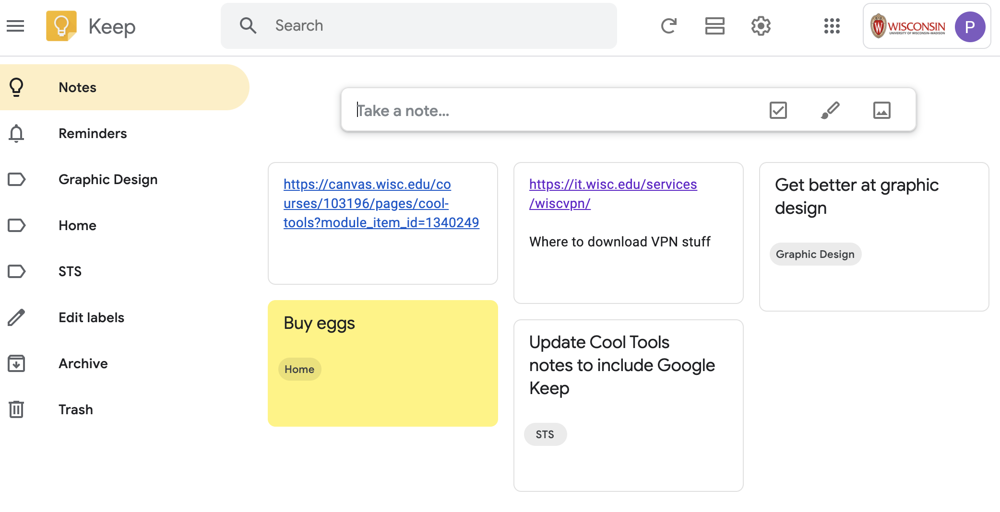
Scanner Pro
Apple App Store
A surprisingly effective document scanner that uses your iOS device’s camera to create and share scans/PDFs
and even generate text from images using Optical Character Recognition.
iOS only, free to download, with $10 in-app purchase for additional features.
Microsoft Lens
Apple App Store
Google
Play Store
Microsoft's version of the PDF creator and note-scanning app.
Free to use and integrates with the rest of the Microsoft ecosystem on campus.
iOS Camera
iOS native app
The native iOS camera app for iPhone and iPad includea built-in image-to-text functionality. Simply point
your phone's camera at words on paper or a screen and tap the yellow box to convert to searchable text.
Adobe Scan
Android
iOS
A free, easy-to-use, cross-platform scanning tool from Adobe that lets you use your smartphone camera to
easily export PDFs and JPGs

Writing Tools and Citations
Scrivener
https://www.literatureandlatte.com/scrivener.php
An organizational tool that helps manage and streamline the writing process for long, multi-part papers.
Keep track of research documents, tag, sort, and rearrange parts of your paper without getting lost in the
copy-paste trap in Word.
Zotero
http://zotero.org
A free citation and research management tool with an add-ins for Word as well as connectors for Chrome,
Firefox, and Safari. Save scholarly journals, research articles, blog posts and more into the preferred
citation format of your choice right from your web browser. Later, export a list of your sources directly to
Word with a few clicks.

EndNote
http://endnote.com
UW-Madison Libraries page on EndNote
Create research collections with references to articles, journals, books, etc. and easily export citations as
a list or bibliography. Create reference groups and share them with collaborators. Integrates with Word.
This is a paid service, but UW-Madison students can log in and use the Basic level for free as long as they
are students.
Mendeley
http://endnote.com
UW-Madison Libraries page on EndNote
Mendeley is a web and desktop-based citation manager. With a free version of Mendeley, you receive 2GB of
online storage space for PDFs and document attachments and one private group with up to three members.
This is also paid service, but UW-Madison students can log in and use the Basic level for free as long as
they are students.
ZoteroBib
https://zbib.org/
Related to Zotero, this tool lets you Enter a book, website, article, or journal and automatically export
citations in MLA, APA, Chicago formats and more without having to make an account or download any apps.
Citations live in a temporary list in your browser until you are ready to export them.
UW-Madison Writing Center
https://writing.wisc.edu/
The Writing a free service available to all UW-Madison students offering writing help (editing, style,
citations, project management, etc.) for any writing project (even things like grant proposals and
applications).
UW Libraries and Library Search
https://www.library.wisc.edu/
https://search.library.wisc.edu/
The libraries on campus have a huge number of resources students can check out or reference - books,
multimedia, video games, even LPs - and give you tools to make it easy to find what you need. You can also
get real-time help from a librarian via chat, phone, or in-person.
The Catalog/Article/Database/Journal Search tools make it easy to find books and articles related to your
research topic. You can filter by peer-reviewed, online access, full-text-only, and more, and retrieve many
sources and databases right from your browser via NetID.
UW-Madison Ask A Librarian
https://www.library.wisc.edu/help/
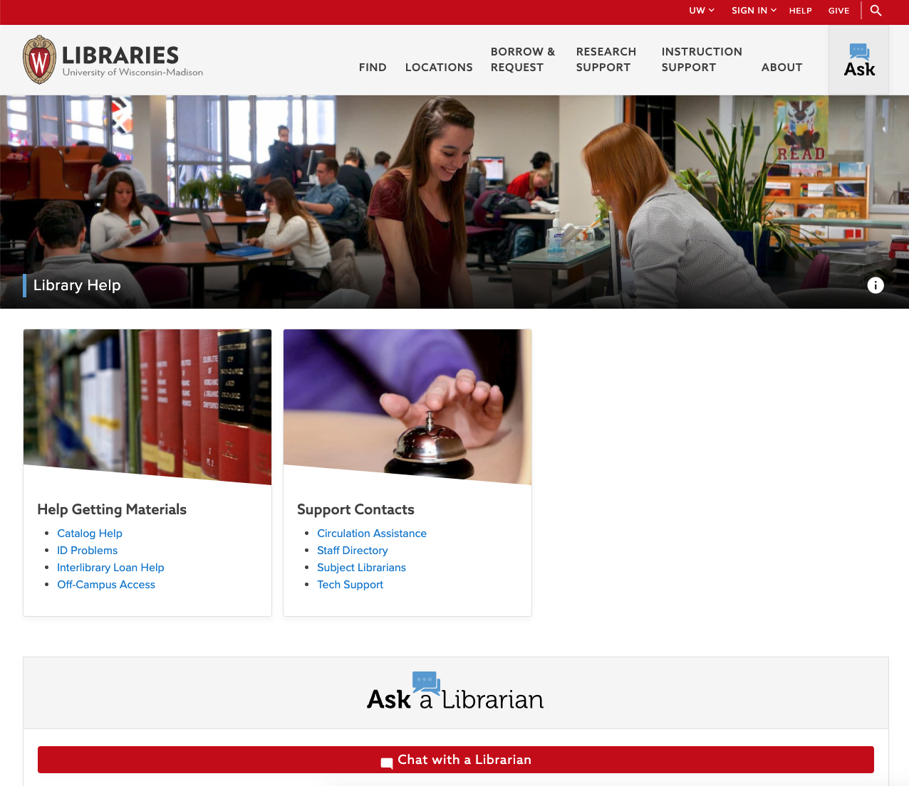
Get on-demand help from a real person who also happens to be a librarian! They can help you search for
resources for class assigments, personal projects, or just to satisfy your curiosity. It's not limited to
just library materials, either - they can help you find all kinds of information onlines.
Design and Graphics
Canva
http://canva.com
Canva makes it easy to produce great looking flyers, posters, business cards and more, using a simple
interface and professionally designed templates.
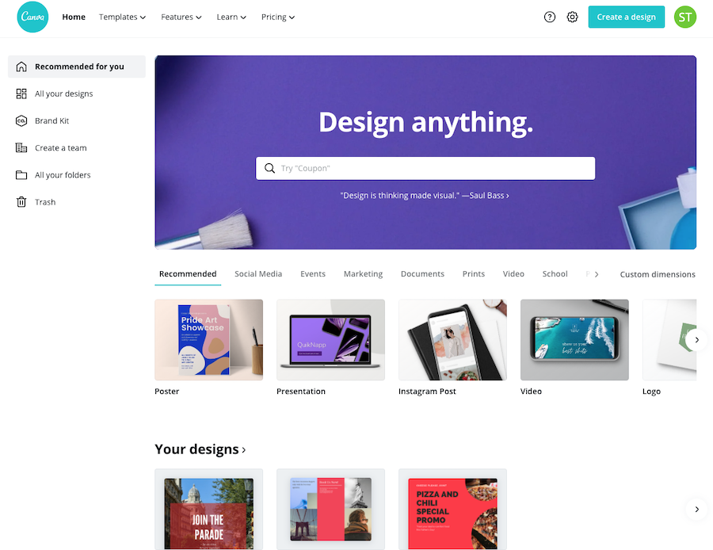
Piktochart
http://piktochart.com
Easily create great-looking infographics, posters, and presentation materials. Projects created with free
accounts feature a Piktochart logo at the bottom (which can be easily cropped of in the photo editor of your
choice).
draw.io
http://draw.io
The draw.io app allows you to easily create and share flowcharts and other types of visual chart aids. Easily
save them to Google Drive, GitHub, and more.
DesignLab
https://designlab.wisc.edu/
The DesignLab is a free service for UW-Madison students that offers design help for any project you may have
- research posters, formatting long documents, student org flyers, video essays, and more.
Set up 1-on-1 appointments with the DesignLab consultants and learn how to make your work easy to understand
and visually pleasing.
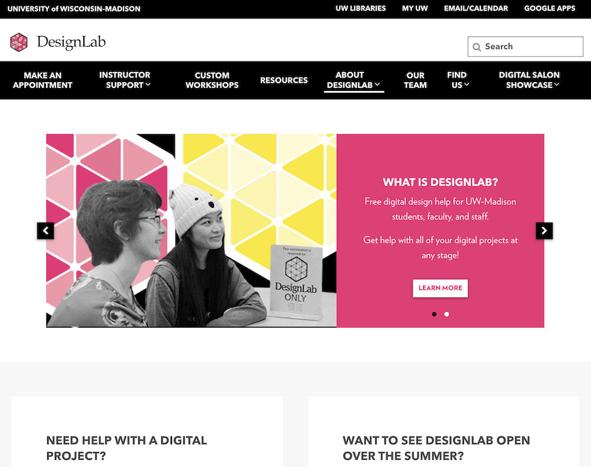
Password Managers
LastPass
https://lastpass.com
Secure cloud-based password manager that lets you save login information, generate hard-to-crack passwords,
and remotely log out and shut down access if your device is lost or stolen.
1Password
https://1password.com
Similar to LastPass but with local storage and support. Has native Mac and Windows apps, browser extensions
for all major browsers, as well as apps for iOS and Android.
No free tier is available, but plans are available for as low as $3/month.
KeePass
https://keepass.info
A free, open-source password manager. Local password storage only, but works for passwords outside web
browsers as well.
Coding and Programming Tools
Visual Studio Code (VS Code)
https://code.visualstudio.com/
Visual Studio Code is one of the most widely used code editors today. Featuring built-in support for many
languages, rich editing tools and workflow improvements, terminal and versional control integration and
more, as well as hundreds of plug-ins to help with specific coding needs.
(Note: this is different from plain Visual Studio)
Project Jupyter
https://jupyter.org
Jupyter is a development environment that integrates Python, R, Julia, and a number of other languages in a
robust platform for data science, scientific computing and more.
Free to use and entirely open-source, there are plenty of resources to help you in your development
workflows.
Communication and Remote Meetings
There are a lot of options available for collaboration and remote meeting. UW-Madison supports a number of
tools for remote work, and there are also options that are available for those outside the university as
well.
Microsoft Teams
https://teams.microsoft.com/
(log in using your NetID@wisc.edu
email)
A full-featured realtime communication platform that is officially supported by UW-Madison.
Chat, video and audio calls, file-sharing, and a wide variety of integrated apps make Teams a great option
for communicating with fellow students as well as faculty and staff.
Google Meet
https://meet.google.com
(log in using your NetID@wisc.edu email)
One of the quickest and most user-friendly ways to start a group meeting with options for video and
screensharing. Officially supported by UW-Madison.
Note: Be sure to log in using your @wisc.edu email (and NOT a personal Gmail) if you want to
start a meeting with screensharing, or to schedule a meeting in advance.
Webex
https://uwmadison.webex.com/
(log in using your NetID@wisc.edu
email)
Officially supported on campus, Webex has long been a video-conferencing standard for business and other
large enterprises.
Not quite as user-friendly as some of the other options, but it has a robust feature set and can scale up to
large numbers of remote attendees.
Zoom
https://uwmadison.zoom.us
The unofficial Official Video Calling Platform of The Quarantine Era.
Zoom was officially brought to campus in Fall 2020 for use by instructors and students.
NOTE: If you have a personal Zoom account that uses your @wisc.edu email address, you may need to consolidate
it with your official UW-Madison account in order to access Zoom meetings that require NetID login.
You can check out this KnowledgeBase article for
details.
Slack
https://slack.com
Not officially supported by campus, Slack is a great chat-based collaboration platform. Lots of third-party
app integrations are available, and the free plan allows up to 10,000 messages
Summary
| Tool |
Supported by UW? |
Pros |
Cons |
| Microsoft Teams |
Yes |
Everyone on campus has access already, easy video calling and real-time chat, integrates with Office
365, available in browser as well as as desktop/mobile apps |
Can be resource-intensive (e.g. eats battery, can slow down your computer) |
| Google Meet |
Yes |
Quickest way to start a video/screensharing meeting with people inside and outside the university.
|
Can be confusing if you have a personal Gmail/Google account |
| Webex |
Yes |
Can support large numbers of attendees |
Not as user-friendly as some of the other options, |
| Zoom |
Yes (starting Fall 2020) |
Widely used, very user-friendly, easy to start up a meeting |
Has a history of questionable security practices |
| Slack |
No |
Very user-friendly, robust free plan, popular outside academia |
No video options by default, limited to 10,000 messages on the free plan |
File/Link Management
Pushbullet
https://www.pushbullet.com/
Quickly send links and files from your browser to your phone/tablet/other devices (and vice versa).
After creating an account, install the browser extension (for Chrome, Firefox or Opera) and mobile app (for
iOS and Android) and with a couple of clicks, you can send files, images, web pages, and more between
devices with minimal fuss.

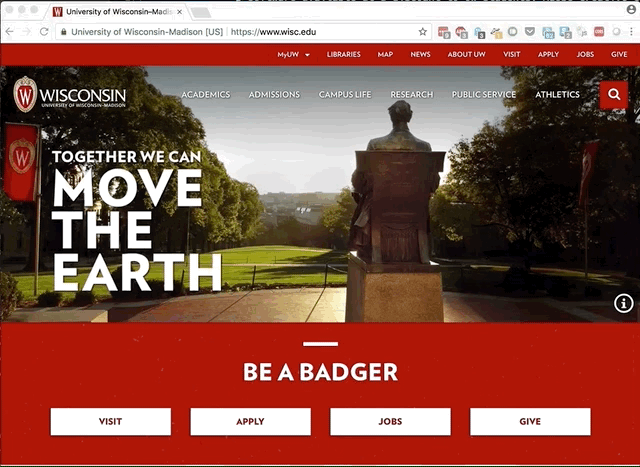
Pocket
https://getpocket.com
Save links and snapshots of web sites for later, with a single click. Tags and keywords make it easy to add
articles to read for later, and the browser extension and mobile apps make Pocket work anywhere you find
articles and websites. The Explore tab includes popular articles and websites that have been saved to Pocket
by many users.
goUW
https://go.wisc.edu/auth/netid/user/
An easy way to shorten long URLs, this service is provided and officially supported by UW-Madison but does
not let you customize links.
Especially helpful on flyers, tweets or anywhere space is a premium (and where you may want to avoid a long,
ugly link)
Bitly
http://bit.ly
An alternative way to shorten links, including the ability to assign custom, easy-to-remember URLs.

Campus Life and Services for Students
Writing Center
https://writing.wisc.edu/
The Writing a free service available to all UW-Madison students offering writing help (editing, style,
citations, project management, etc.) for any writing project (even things like grant proposals and
applications).
Union Event Calendar and Today In The Union (TITU)
https://union.wisc.edu/events-and-activities/event-calendar/AdvSearchForm/
http://union.ems.wisc.edu/VirtualEMS/CustomBrowseEvents.aspx?data=MeN0rP%2fRPNoJS2WjBImM5NV%2b64hv0ZxW
Today in the Union is a great way to stay current with what's happening today at Memorial Union and Union
South. Music performances, speakers, campus events, and more.
The Union Event Calendar lists upcoming events on a longer timescale.
UW-Madison Events Calendar
https://today.wisc.edu/
Similar to Today in the Union, the UW Events Calendar lists events from all around campus. Speakers, art
exhibitions, training events (like STS Workshops) and more.
Student Job Center
https://jobcenter.wisc.edu/
The easiest way to find a job on campus.
Multicultural Student Center
https://msc.wisc.edu/
A great resource for connecting with, learning about, and getting involved with some of the diverse and
underserved parts of the campus community. The MSC provides workshops on inclusivity, social justice,
advocacy, and more, as well as resources for students from historically underrepresented groups on campus.
The MSC recently opened the Latinx Student Center
and Asian Pacific Islander Desi American Student Centers and is also the parent organization to the Black Cultural Center, which
supports, advocates, and provides resources for students of African-American, Caribbean, Afro-Latinx, and
African Diaspora descent.
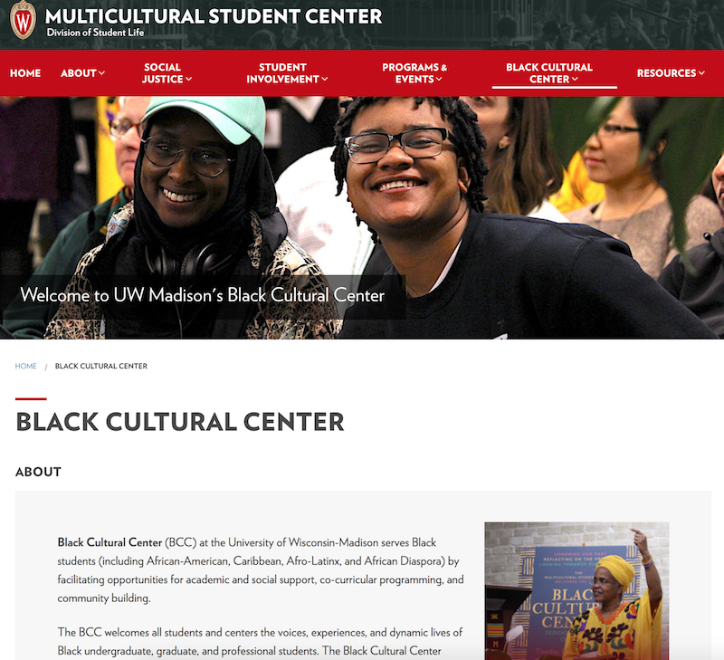
McBurney Disability Resource Center
https://mcburney.wisc.edu/
The McBurney is the campus source for ensuring accessibility, inclusivity, and equal opportunity for students
of all ability levels. Physical accommodations, assistive technology, sign-language interpreters,
note-takers and many other servicesare available for students and staff with disability-related needs.
Related: the Disability Resource Guide from Facilities
Planning and Management (FPM) offers resources for building access and accomodation, emergency planning,
snow removal, and more.
Dining Hall Menus
http://menus.housing.wisc.edu/menus/
See what's for lunch without having to hoof it all the way to the dining hall.
Campus Maps
http://maps.wisc.edu
Find your way to classes and campus events without having to wander aimlessly. Find buildings, bus routes, B
Cycle locations, and more.
Marquee Movie Theater
https://union.wisc.edu/visit/union-south/the-marquee/
A real-deal movie theater, right in Union South. Features 35mm and digital HD projection, and movie selection
ranges from current run movies to classics.
Movies are chosen and provided free of charge by WUD Film and are not limited to students - friends and family are welcome!
WUD
https://union.wisc.edu/get-involved/wud/
Who decides which distinguished lecturers to invite, bands to book, movies to show, and events to schedule?
You do! The Wisconsin Union Directorate (pronounced like 'wood') is a student-run organization that
programs all Wisconsin Union activities and events.
All students are invited to join and participate.
Software Training for Students
http://wisc.edu/sts
Free technology training workshops for all undergraduate and graduate students at UW-Madison. Attend free
open-enrollment workshops, schedule custom training for your student organization, or get 1-on-1 help with
your specific projects.
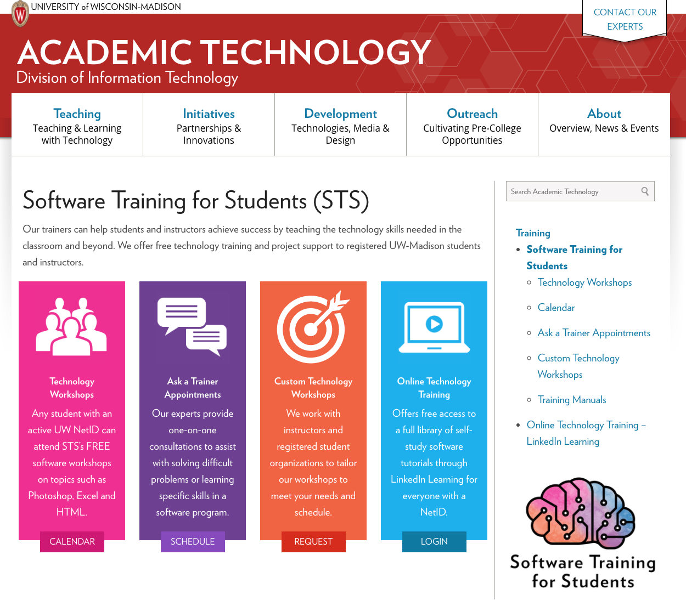
UW-Madison Experts Database
https://experts.news.wisc.edu/
This list was assembled as a resource for media outlets to look up to faculty and staff members who are
willing to speak as experts in their respective area of study, but it’s also a great place to start looking
if you need an expert for reference.
Privacy and Advertising Management
AdBlock Plus
https://adblockplus.org/
Open-source plugin designed to block intrusive ads (including YouTube pre-roll ads), trackers, and general
bad news. You can also block specific elements on a web page from displaying.
By default, AdBlock Plus allows what it calls "Acceptable Ads" and other advertising that it calls
unobtrusive, but you can set it to block ALL advertising via ABP's preferences screen.
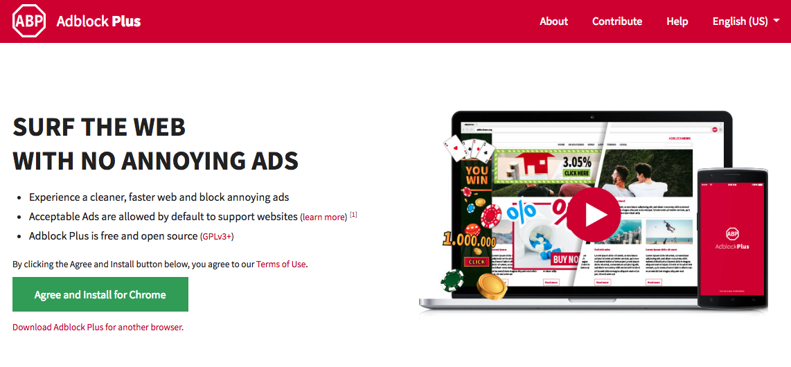
Privacy Badger
https://www.eff.org/privacybadger
An open-source browser extension that blocks trackers, cookies, and information-aggregation services from
using your browsing data without your knowledge.
Gives a clear breakdown of whether each website's script is a tracker or not, and lets you enable/disable
them individually.
HTTPS Everywhere
https://www.eff.org/https-everywhere
This browser extension from the Electronic Freedom Foundation that automatically re-routes traffic to HTTPS
(aka uses the encrypted channel) for websites that support HTTPS, which helps prevent people from snooping
on your web browsing.
Won't encrypt your data on sites that don't have HTTPS security certificates installed, but it's an easy and
hassle-free way to make your web browsing more secure where possible.
Quick Javascript Switcher
Chrome Extension
Turns off Javascript (aka the source of most of those annoying “You’ve read all of your free articles for the
month! Subscribe here!”, “Sign up for our newsletter!” popups, etc.) per site, with the click of a button.
Has the added benefit of disabling most advertising and tracking/surveillance tools that websites use, but
can break some websites that need JavaScript to function.

Miscellaneous and Fun
Focus-improving Tools
Limit or restrict access to non-productive web sites (like Facebook, Twitter, etc.) so you can focus on the
things that you really should be doing, when you can’t quite bring yourself to do them yourself.
Freedom
https://freedom.to/
A paid service with a free trial. This allows you to block particular apps on your laptop or device as well
as websites.

StayFocusd
https://chrome.google.com/webstore/detail/stayfocusd/laankejkbhbdhmipfmgcngdelahlfoji?hl=en
(Chrome only)
Chrome extension that allows you to specify websites you'd like to avoid spending too much time on.
LeechBlock
https://addons.mozilla.org/en-US/firefox/addon/leechblock-ng/
(Firefox only)
Firefox add-on that allows you to specify websites you'd like to avoid spending too much time on.
10 Minute Mail
http://10minutemail.com
Create a temporary email address that expires after 10 minutes (or extend it in increments of 10 minutes as
needed). Helpful when a site or service requires you to create an account to use it or try it out, but you
don’t want to get their spam every 4 days for all of eternity.
A similar site with a slightly different interface is Temp-Mail
Grammarly
https://www.grammarly.com/
Avoid common grammar mistakes, incorrect word choice (loose vs. lose, their/they’re/there, your/you’re etc.)
when writing email, social media posts, messages, etc.
UW-Madison Subreddit
https://www.reddit.com/r/UWMadison
A small but reasonably active community on the massive social website Reddit.
There are many questionable aspects of Reddit as a whole, but this subreddit (their term for a topic-focused
community forum) is good for updates on things happening on campus, other students' experiences with
particular classes/instructors, and general life as a Badger.
A Soft Murmur
https://asoftmurmur.com/
This simple website offers a variety of types of ambient noise to help you relax and focus. Mix and match
different noise options using volume sliders. The main site is free, but you can also sign-up for a paid
version with more sounds and presets.
Honey
https://www.joinhoney.com/
Automatically find and apply coupons at checkout at dozens of popular e-commerce sites.
RetailMeNot
https://www.retailmenot.com/
Similar to Honey, a great way to find retail deals both online and in-store.

Learn Music with Ableton
https://learningmusic.ableton.com/
This is a novel but in-depth introduction to how music works, from basics like beats and melody to more
complex topics like polyrhythms. Easy to follow for any skill level - no previous music experience required.
MediaStinger
http://www.mediastinger.com/
A site that tells you whether the movie you’re watching has any special scenes or after-credits moments